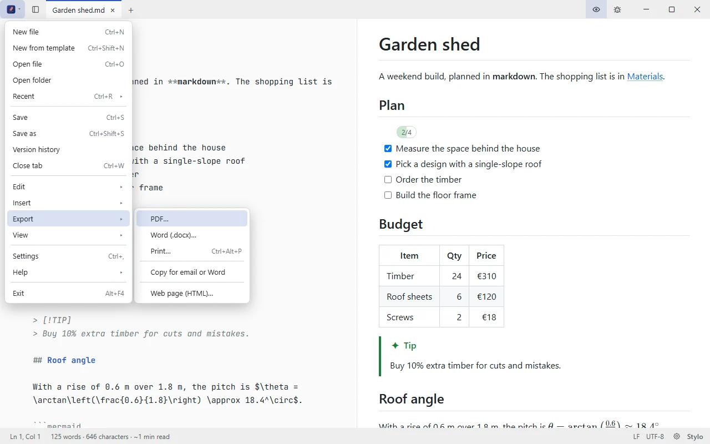
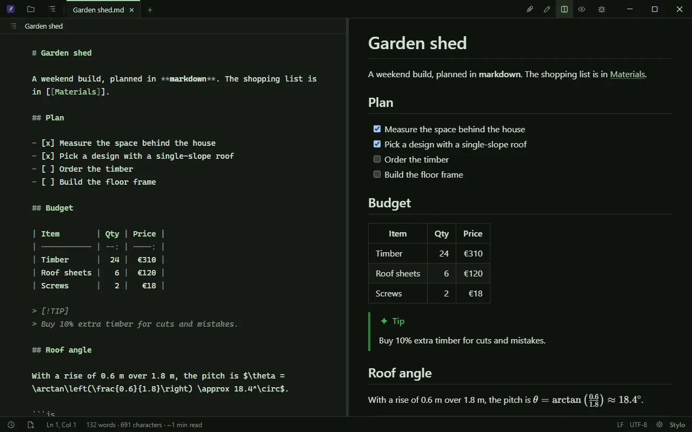

Write the way you like
Markdown with the page beside it, scrolling along with you. Or the writing view: just the text, no symbols, at the line width you like, with paragraph focus or typewriter scrolling.

Write in plain .md files with the formatted page beside them, or in a clean view without the symbols.
Notes, math, diagrams and PDF in one small, fast app. No account, no subscription, no telemetry.
Windows 10 and 11, 64-bit · about 7 MB · no administrator rights needed
Ubuntu, Debian, Fedora and more, 64-bit · AppImage, .deb or .rpm

Markdown with the page beside it, scrolling along with you. Or the writing view: just the text, no symbols, at the line width you like, with paragraph focus or typewriter scrolling.
Open a folder and every .md in it is in one column. Search across all files,
[[links like this]] between notes, and which notes point to the one you're in.

PDF in one click, HTML, and formatted text for email, Word or Teams.

Light and dark themes (this one is Mint), your own fonts, shortcuts you can change, and an English or Greek interface.

Stylo_…_x64-setup.exe from the
latest release.
Windows 10 and 11, 64-bit · about 7 MB · no administrator rights needed
Ubuntu, Debian, Fedora and more, 64-bit · AppImage, .deb or .rpm
Pick the file for your system. Each one updates itself with the same kind of file.
sudo apt install ./Stylo-Linux.debsudo dnf install ./Stylo-Linux.rpmlibfuse2t64.
chmod +x Stylo-Linux.AppImage && ./Stylo-Linux.AppImageNeeds a 64-bit (x86_64) system from about 2022 on: Ubuntu 22.04, Debian 12, Fedora 37 or newer. Not there yet on Linux: spelling suggestions and page numbers in PDFs. Something wrong? The bug icon in the title bar prepares a report.
The first time, SmartScreen may say “Windows protected your PC”. Click More info, then Run anyway.
The installer isn't code-signed: a certificate costs money every year, and Stylo is free. Windows warns about any unsigned app that few people have run yet.
Each release has a .sha256 next to the installer. In PowerShell, in your downloads folder, this
prints True. Use the version number you downloaded.
(Get-FileHash .\Stylo_1.0.0_x64-setup.exe).Hash -eq (Get-Content .\Stylo_1.0.0_x64-setup.exe.sha256).Split(' ')[0]Yes. No ads, no account, no paid version. It's a personal, non-profit project. You can pass it on to others as it is; it may not be sold. See the licence.
Yes. The licence allows personal, educational and commercial use.
Yes. It only goes online to look for new versions.
Linux, yes: a beta, see Linux (beta). Mac, no.
No, the source is private. Stylo is built on open-source software, listed with its licences in the third-party notices.
When it starts, it asks GitHub whether there's a new version and offers to install it. Nothing installs without your OK. You can turn the check off in Settings → General.
Your writing is plain .md files, wherever you save them. Settings, drafts, version history and a
small error log are in %LOCALAPPDATA%\gr.stylo.app. Nothing is uploaded anywhere.
Windows Settings → Apps → Installed apps → Stylo → Uninstall. It asks whether to delete settings, drafts and
history too. Your .md files are never touched.
Click the bug icon at the top right of Stylo. It opens a ready GitHub issue for you to read and send. Ideas are welcome on the issues page.
No usage tracking, no account, no crash reports sent behind your back.
The one thing it does online on its own is ask GitHub for a new version. Turn it off in Settings → General.
“Report a bug” prepares an issue with the Stylo and Windows versions, with no file names or contents. Errors are logged only on your PC.
No cookies, analytics or trackers. It's hosted on GitHub Pages.
Whatever your documents point to on the web (links, images) opens or loads from there, as in any browser.